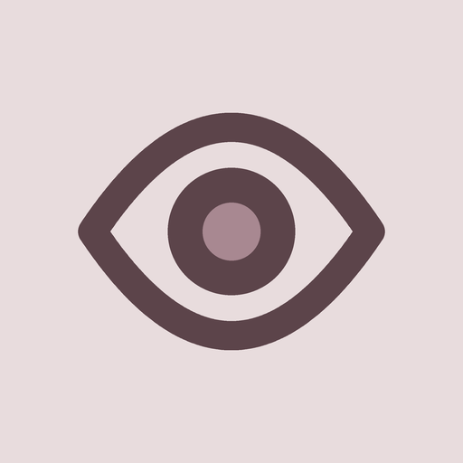

Eye Test & Eye Exercises Terms of ServiceBy installing or using Eye Test & Eye Exercises (“the App”), you agree to these Terms. If you do not agree, do not use the App.
We grant you a personal, non-exclusive, non-transferable, revocable license to use the App on devices you own or control, in accordance with these Terms and the relevant app store’s terms.
Eye Test & Eye Exercises produces categorical screening results only: no finding, mild, or marked. It does not measure a prescription, it does not report a diopter value or an axis, and it is not a substitute for an eye examination by a qualified professional. A result of “no finding” does not mean your eyes are healthy, and conditions that need medical attention can be present without any result the App can detect.
The exercises are intended to ease the tired feeling after long screen use. No claim is made that they improve eyesight, correct refractive error, or treat any condition.
If you notice sudden vision changes, pain, flashes, floaters, distortion, or any symptom that worries you, contact an eye care professional. Do not delay care because of anything this App shows you.
You agree not to reverse engineer, resell, or redistribute the App, and not to use it in any unlawful way.
The four core tests and the free exercises require no payment; the free version shows ads. Pro is offered as a monthly or annual subscription that adds six more measurements, the full history with charts, the PDF report, backup and device transfer, the longer exercise routines, and removes all ads. Trial availability and duration depend on eligibility and the offer shown by Google Play. Your actual price, any trial, the charge after it ends, renewal terms and cancellation information are shown before you confirm a purchase. Payments, renewals and cancellations are handled by Google Play; you can cancel any time in its subscription settings. Statutory withdrawal and refund rights remain unaffected.
The App is provided “as is” without warranties of any kind, express or implied, including merchantability, fitness for a particular purpose and non-infringement. Measurement accuracy depends on your device’s screen, camera and lighting conditions, and results are indicative only.
To the maximum extent permitted by law, Kurtsoft Yazılım ve Teknoloji A.Ş. shall not be liable for any indirect, incidental, special or consequential damages arising out of or related to your use of the App.
We may update the App and these Terms; the current version is always published at this address. Continued use after changes constitutes acceptance.
These Terms are governed by the laws applicable at Türkiye.
Kurtsoft Yazılım ve Teknoloji A.Ş., Türkiye
support@kurtsoft.com.tr